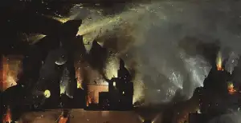
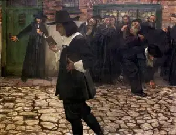
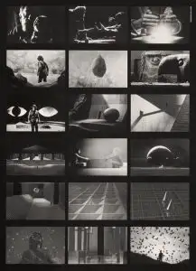
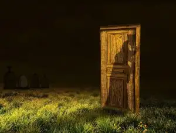
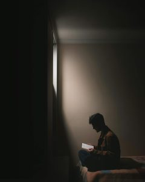

Arte
6 de noviembre de 2026
La fuente principal que toma Benjamin son los trabajos en se publican en Athenäum , una revista efímera tirada, como todas las buenas revistas, fruto de una unidad intelectual de esas…

Literatura
5 de noviembre de 2026
El jardín de las delicias (detalle), Dominio público. Caminé por las calles aquella noche sin rumbo fijo, deseando terminar, deseando que todo terminara. Como se suele decir, ya estaba…
Educación
2 de noviembre de 2026
PublicDomainArchive . Quizá se deba a la edad, pero cada vez me resulta más extenuante afrontar la continua pregunta de «¿para qué sirve esto?» —Para qué sirve la sintaxis, yo ya sé…
Filosofía
28 de octubre de 2026
Fotografía de Anestiev Se produce con este término un efecto semejante al de otros dentro de la terminología filosófica, en la que el lema termina por reducir el contenido mismo de lo…
Arte
27 de octubre de 2026
D ie blaue Blume : Fotografía de SpencerWing en Pixabay . Licencia de contenido de Pixabay . Se trata de la tesis doctoral de Benjamin escrita en Berna entre los años 18-19. Es sin…
Filosofía
26 de octubre de 2026
Fotografía de isabellaquintana en Pixabay . Licencia de contenido de Pixabay . Las multinacionales tienen una habilidad incomparable para extenderse viralmente por todo el mundo y…
Filosofía
24 de octubre de 2026
Maravillosa fotografía de Nino Carè en Pixabay Circula actualmente la polémica que se ha generado por una novela francesa sobre la que pesa la acusación de haber sido elaborada en una…

Filosofía
22 de octubre de 2026
Samuel Hirszenberg, Spinoza excomulgado (1907). Dominio público. Fuente: Wikimedia Commons . Se trata de un libro de Vicente Serrano publicado por Anagrama en 2011. Aunque el punto de…
Filosofía
20 de octubre de 2026
Escudo de la casa Bolton. Fuente: https://es.wikipedia.org/wiki/Casa_Bolton#/media/Archivo:House-Bolton-Main-Shield.png Frente al planteamiento fantástico de Breton, la literatura…
Filosofía
9 de octubre de 2026
Fotografía de stevepv . « De nominibus non est disputandum» dicen que decía Santo Tomás de Aquino: sobre los nombres no se discute . Sin embargo, en la actualidad está meridianamente…
Filosofía
11 de septiembre de 2026
Fotografía de itay-verchik . Vaya por delante que este texto no tiene una pretensión moralizadora ni desmoralizante, sino tan solo constatar una tendencia, digamos,…
Cine
26 de agosto de 2026
Imagen de Mikhail Nilov . Resumen de la película (con Spoilers ). La película consiste en una producción minimalista con solo tres personajes más una IA. Se divide en tres actos. El…
Filosofía
16 de agosto de 2026
Eclipse , de Danehrr22 . Todo el mundo ha llegado a escuchar algo sobre el eclipse que se aproximaba. Ha abierto los diarios y ha movilizado a masas de personas hacia los lugares…
Literatura
11 de agosto de 2026
«Hojas secas», de Annette Meyer . Es este un libro que en condiciones normales no habría leído. Me acerqué a él por recomendación de una alumna y gracias al préstamo de una compañera.…

Cine
5 de agosto de 2026
Imágenes en B/N de la película. Quest , de Saul y Elaine Bass es un cortometraje escrito por Ray Bradbury realizado con medios predigitales y una gran imaginación. Ambientada en un…
Filosofía
11 de marzo de 2026
Fotografía de: TRAPHITHO Un libro de género teatral en la línea de las obras de Ende: una realidad, en este caso muy sórdida, se mezcla con una fantasía sublime. En ella se da un…
Filosofía
3 de marzo de 2026
Puente de Manhattan en Brooklyn, patria de Paul Auster. Por noelsch . Este libro de Auster representa la evolución vital de las temáticas y obsesiones del autor al alcanzar la vejez.…
Literatura
26 de febrero de 2026
Labyrinth, Travel, Stone image. Por ddzphoto . «Me preocupa con creciente intensidad la idea de que la así llamada realidad no es más que el piso bajo, por no decir la casa del…

Filosofía
8 de febrero de 2026
Foto de Mollyroselee . Últimamente le doy vueltas a esta idea: todo aquel que se dedica a la filosofía pende de una única tesis, formulada por Sócrates: «una vida sin examen no merece…
Filosofía de la Tecnología
5 de febrero de 2026
Este mensaje me fue enviado ayer 04/02/26 por parte de Telegram: ❗️ El gobierno de Pedro Sánchez está impulsando nuevas regulaciones peligrosas que amenazan vuestras libertades en…

Filosofía
7 de abril de 2025
Puede que una de las palabras más próximas a eso que se denomina filosofía sea esta del «pensamiento». Desde el Cogito cartesiano se ha establecido que una de las cualidades propias…
Bachillerato
31 de marzo de 2025
Para decir aún una palabra más sobre la instrucción de cómo debe ser el mundo, la filosofía de todos modos llega siempre demasiado tarde para ello; ella, como el pensamiento del mundo,…
Filosofía
25 de marzo de 2025
No-Cosas de Byung-Chul Han es un libro que prolonga la crítica cultural al tardo capitalismo y que se inscribe en una corriente muy amplia y diversa en la que se analizan las…
Filosofía
21 de marzo de 2025
Con este título apelo a un libro que no he encontrado y que tal vez merecería ser escrito. Y digo bien, no he encontrado, lo que no significa que no lo haya, porque no he tenido tiempo…
Filosofía
20 de marzo de 2025
Después de terminar el capítulo dedicado a Avempace y habiendo leído El Régimen del Solitario, dedico unas pequeñas reflexiones antes de seguir con Averroes. El libro, desde luego,…

Filosofía
18 de marzo de 2025
Dice La Rochefoucauld en sus máximas: 11. «Las pasiones engendran con frecuencia otras contrarias: la avaricia produce algunas veces la prodigalidad, y ésta la avaricia; a menudo se es…
Filosofía
17 de marzo de 2025
Plataformas como Facebook o Google son los nuevos señores feudales. Incansables, labramos sus tierras y producimos datos valiosos, de los que ellos luego sacan provecho. Nos sentimos…
Filosofía
16 de marzo de 2025
Este es un blog personal de carácter educativo en torno a la disciplina de filosofía, de la que soy docente. Podría ser interesante como primera entrada tratar de definir en qué…
No hay entradas que coincidan. Prueba con otra palabra o tema.